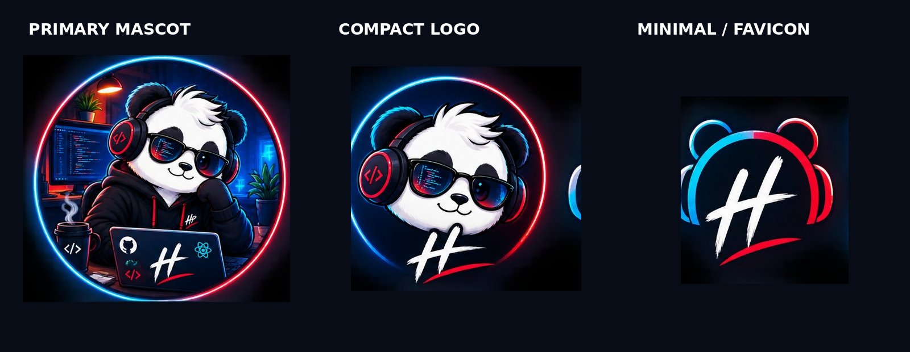

01 — AI / AUTOMATION
01
Hariom AI
An AI-agent workspace exploring task planning, multi-provider models, tool execution and browser/computer automation.
VIEW REPOSITORY ↗
HARIOMLet's build ↗SOFTWARE DEVELOPER / AUTOMATION SPECIALIST
I turn ideas into practical web apps, automation workflows and AI-powered tools.
I'm Hariom Patel, a developer focused on Python, web development, automation and AI integrations.
I learn by building: break a problem down, ship a useful version, test it, then improve the system. The result is a growing collection of real projects and experiments.
 THE COMMAND CENTER / REAL WORKSPACE
THE COMMAND CENTER / REAL WORKSPACEAn AI-agent workspace exploring task planning, multi-provider models, tool execution and browser/computer automation.
VIEW REPOSITORY ↗ 02 / WEB APP
02 / WEB APPReal-time balance, categorisation, transaction history and CSV export.
LIVE PROJECT ↗ 03 / DATA PIPELINE
03 / DATA PIPELINEPython workflow for extracting, cleaning and structuring web data into CSV/JSON.
 04 / AUTOMATION
04 / AUTOMATIONPython utility for system actions, browser/app launching and file workflows.
The interesting part isn't one technology. It's how the pieces connect.

OOP · automation · scraping · AI APIs
HTML · CSS · JavaScript · responsive UI
FastAPI · Flask · Django · REST
Pandas · NumPy · CSV · JSON
Git · GitHub Actions · CI/CD
VS Code · Terminal · DevTools
HAVE AN IDEA? LET'S MAKE IT REAL.